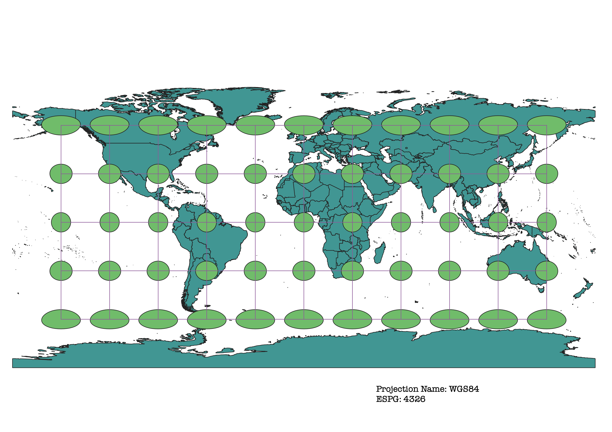
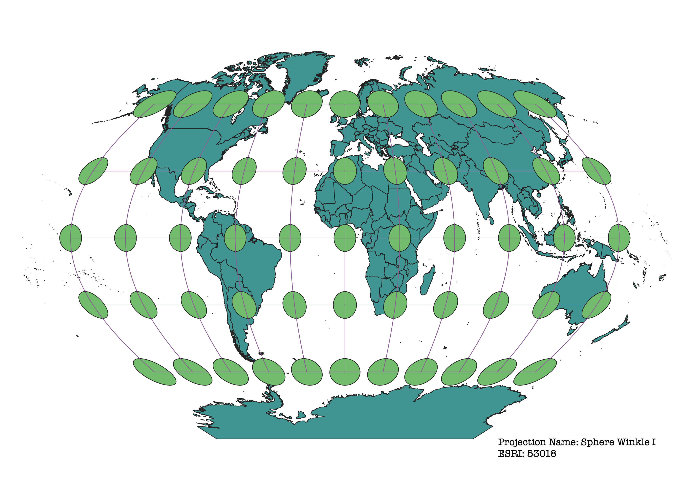
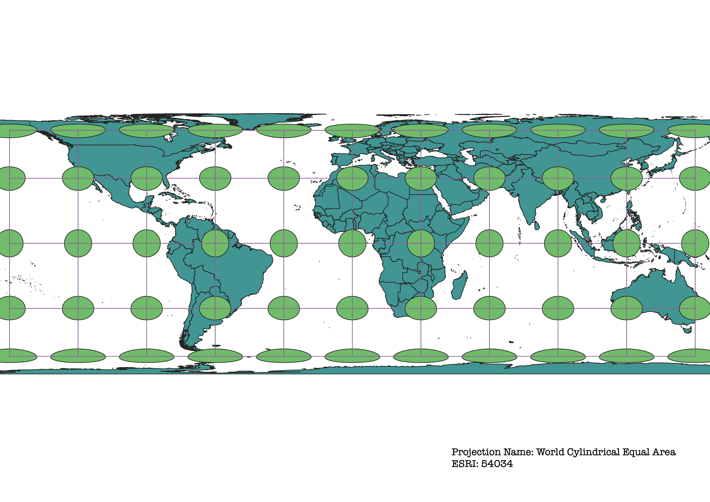
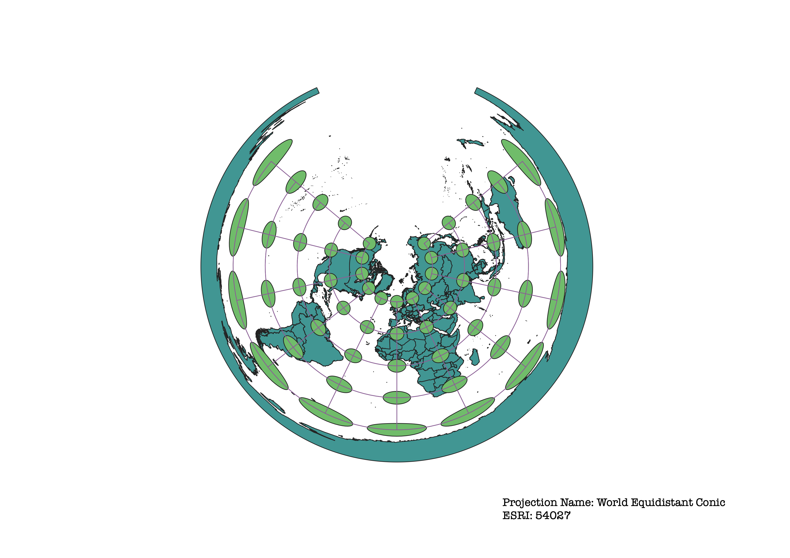
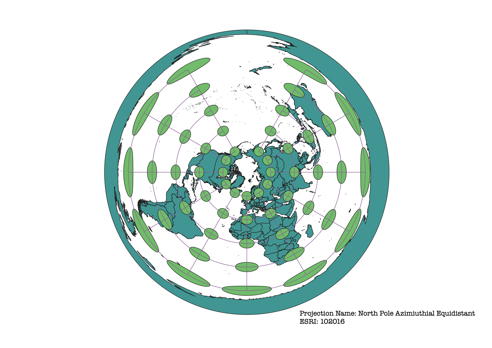
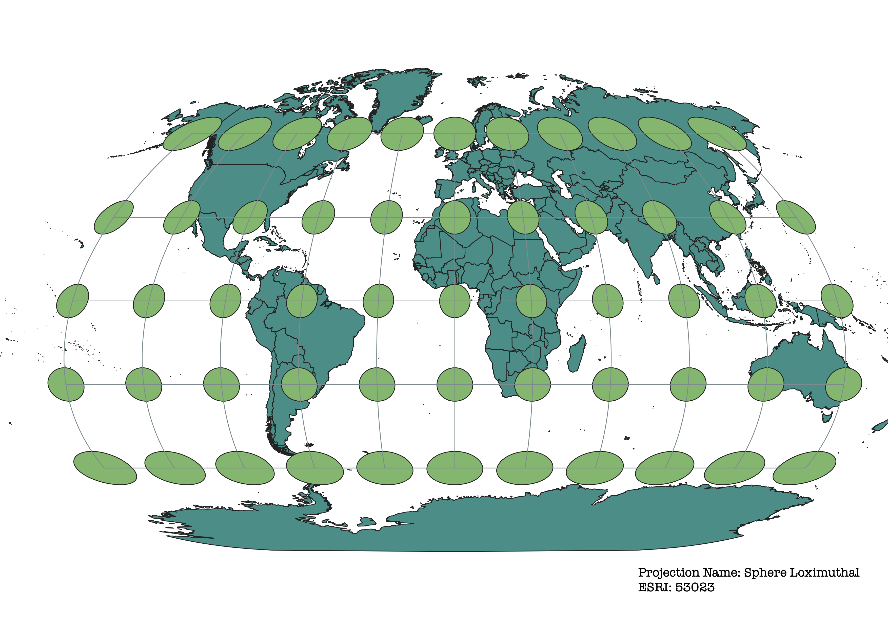
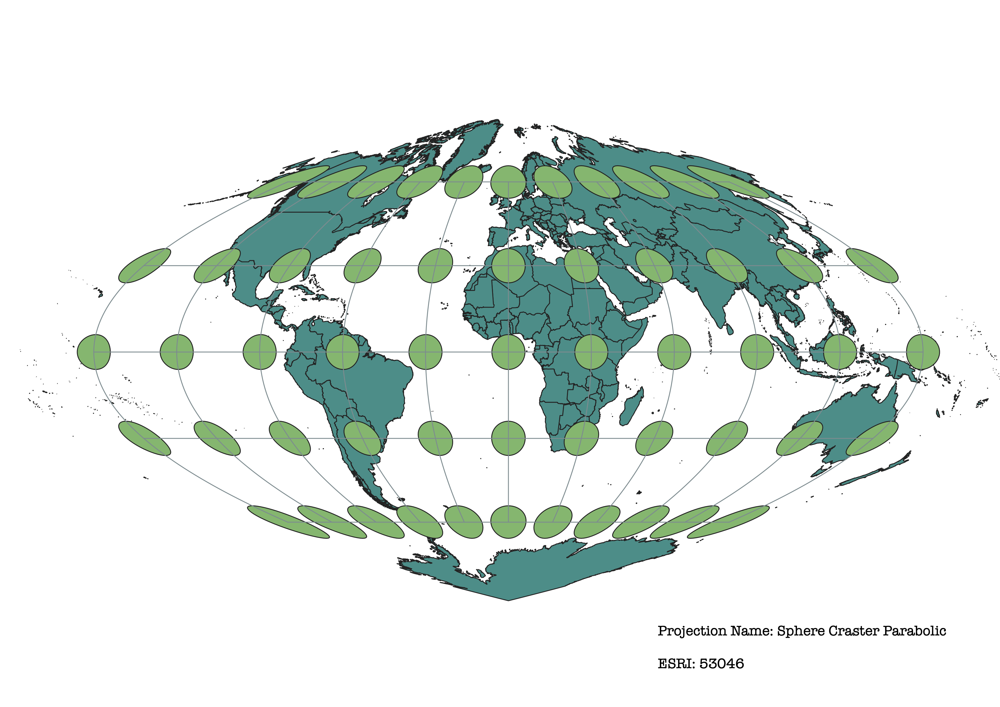

World Projections Project
Sarah Montague 2/2/22
For this assignment I used data from natural earth data and used QGIS to project it in different ways. I did this by using the Indicatrix Mapper plug in. I watched the tutorial videos to learn how to install the plugin and use it to project caps onto my maps to see how the different projections alter shape, distance, and area.
WGS84 Projection
This map is a cylincrical projection. Around the equator there is very little distortion however to the North and South the projection stretches horizontally and larger in general.

Aitoff Projection 54034
This is a cylindrical projection. There is very little distortion around the Prime Meridian and equator, but there is more farther out.

Pseudo Mecator 3857 Projection
This is a cylindrical projection. There is very little distortion at and around the equator. Towards the North and South the area of the land masses is distorted to be larger, more so in the South.

Sphere Winkle I 53081 Projection
This is a cylincrical projection. There is almost no distortion at the equator and Prime Meridian. The "corners" of the map are the most distorted.

World Cylindrical Area 54034 Projection
This is a cylindrical proection. There is almost no distortion at and around the equator, but at the North and South there is a lot of distortion regarding shape and distance.

World Equidistant Conic 54027 Projection
This is a conic projection. The south pole is in the center of the map and as you look further from the center the shape and size becomes more and more distorted. The map does not form a full circle because it is a conic projection, not Azimuthial/Planar.

North Pole Azimuthial Equidistant 102016 Projection
This is a Azimuthial projection. It is very similar to the World Equidistant Conic except the center of the map is at the North Pole instead of the South Pole. This map also forms a complete cirlce.

Sphere Loximuthal 53023 Projection
This is a cylindrical projection. Across the map there is not much distortion, but at the North and South there is distortion making area larger and distorting shape. The distortion is more prominent in the South. This seems to be one of the least distorted projections in this project.

Sphere Craster Parabolic 53046 Projection
This is a cylindrical projection. The only place this map is not distorted is along the equator. The rest of the map is heavily distorted in size and shape. This distortion becomes stronger closer to North and South.

Data used for this project
Download Natrual Earth 1:10m Cultural Vector